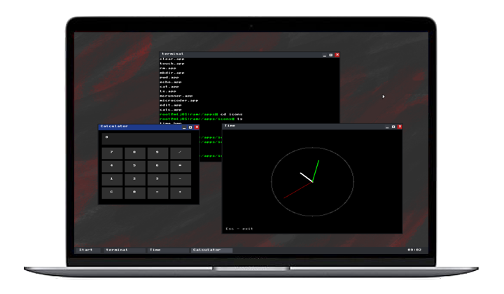
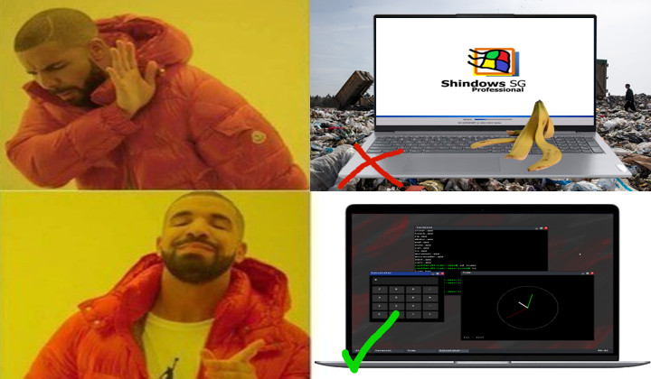
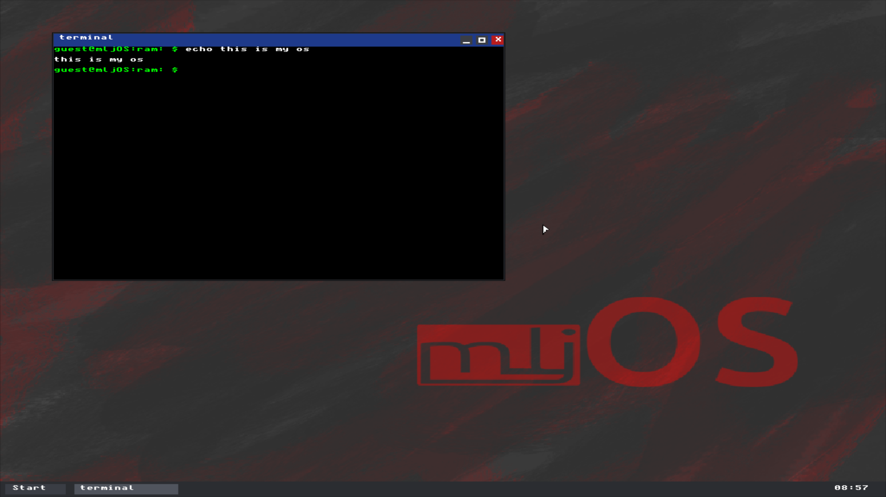
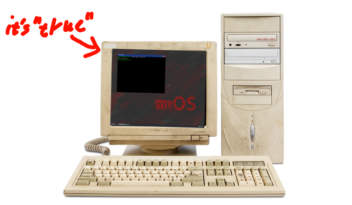
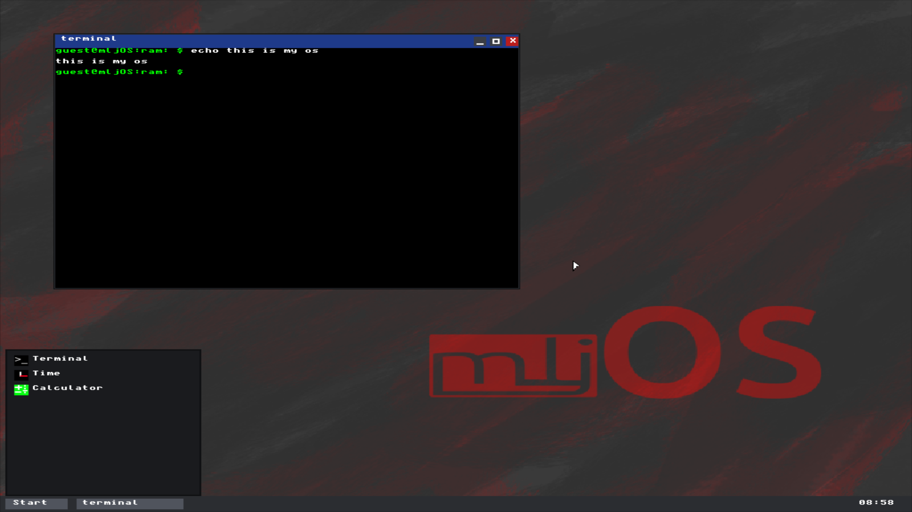
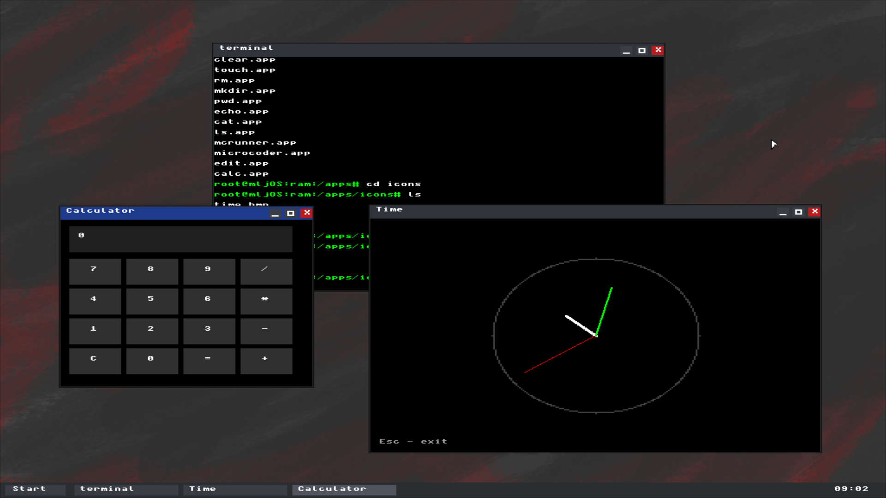
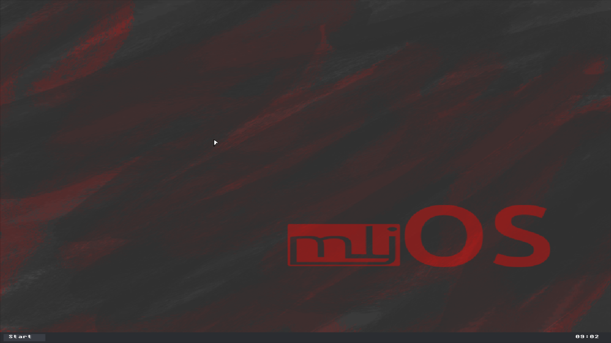
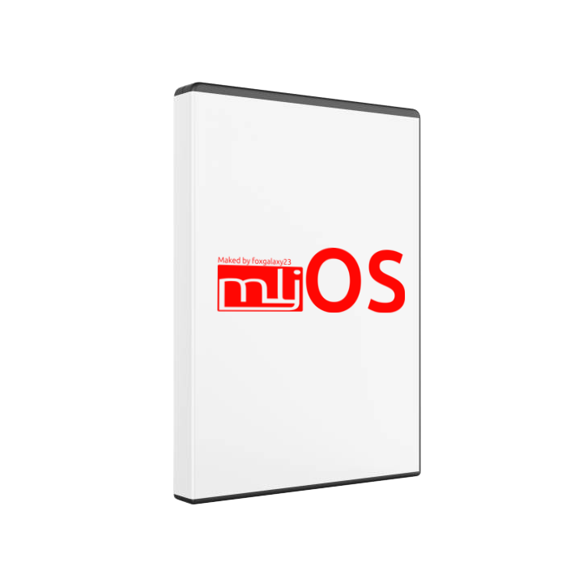

Introducing mljOS 1.2
Meetlook just operation system who writed just for fun by noname person
More clear then popular OS
Because it writed in clear C and Assembler without any garbadge

AI, AI, AI, AI, AI
Did you know this project writed with AI Chatbots and AI Agents
The most "beautiful" Ui ever made

Or not, because it's personal opinion, lol
Builded for old devices(or not)

You could try our operation system on your old laptop or PC
Here some screenshots




Download our operation system with this bottom button!!
this is bottom button or maybe it's just download button for downloading x86 version of this OSOur(My) Social Medias and Contacts